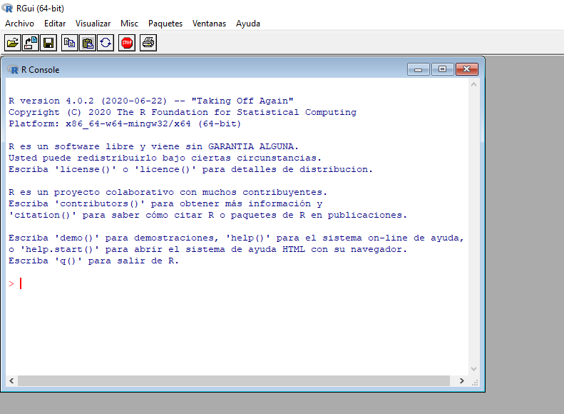

Apéndice A Instalando R
A.1 Windows
Entrá a https://cran.r-project.org/bin/windows/base/ y bajate el instalador haciendo click en el link grandote que dice “Download R x.x.x for Windows”. Una vez que se bajó, hacé doble click en el archivo y seguí las instrucciones del instalador.
Una vez que se termine de instalar, te va a aparecer un ícono como este en el escritorio o en los programas instalados R Programming Language icon PNG and SVG Vector Free Download
Al ejecturalo, les tiene que aparecer algo como esto:
knitr::include_graphics("img/r-en-windows.png")
Para instalar algunos paquetes de R vas a necesitar instalar un programa adicional llamado rtools. Entrá a https://cran.r-project.org/bin/windows/Rtools/ y descargate el instalador en donde dice “On Windows 64-bit: rtoolsxx-x86_64.exe (recommended: includes both i386 and x64 compilers)”
Finalmente abrí la consola de R, poné esto y apretá enter:
writeLines('PATH="${RTOOLS40_HOME}\\usr\\bin;${PATH}"', con = "~/.Renviron")Finalmente, para chequear que todo esté bien, cerrá R, volvé a abrirlo, escribí esto en la cosola y apretá enter:
Sys.which("make")Debería salir algo como esto:
c(make = "C:\\rtools40\\usr\\bin\\make.exe")## make
## "C:\\rtools40\\usr\\bin\\make.exe"A.2 Ubuntu o derivados
Para tener la última versión, tenés que agregar los repositorios de CRAN. Para hacerlo, vas a tener que tener permisos de administrador. Los detalles están en esta página, pero el resumen es:
sudo apt update -qq
sudo apt install --no-install-recommends software-properties-common dirmngr
sudo apt-key adv --keyserver keyserver.ubuntu.com --recv-keys E298A3A825C0D65DFD57CBB651716619E084DAB9
sudo add-apt-repository "deb https://cloud.r-project.org/bin/linux/ubuntu $(lsb_release -cs)-cran40/"
sudo sudo apt install r-base r-base-devSi todo salió bien, tenés que tener instalado R en tu máquina y podés ejecutarlo con el comando R en la consola.
knitr::include_graphics("img/r-terminal.png")